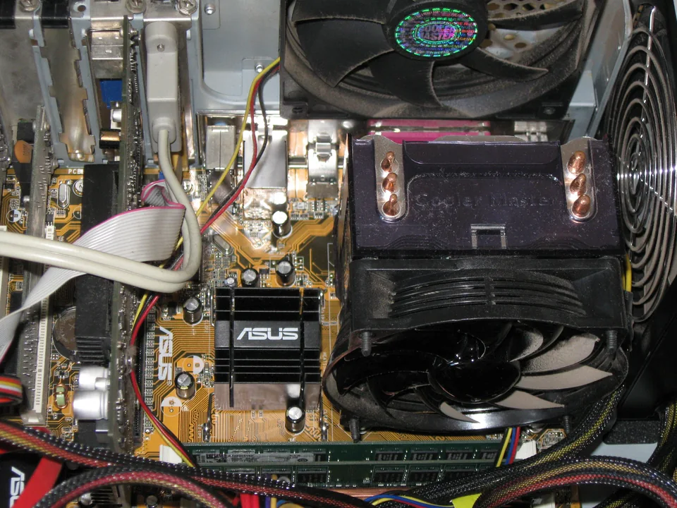
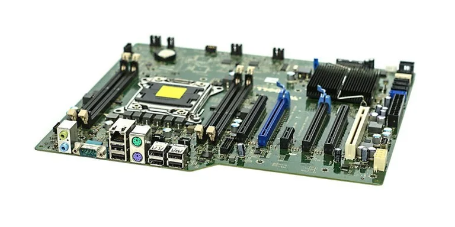
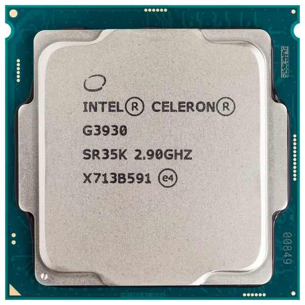
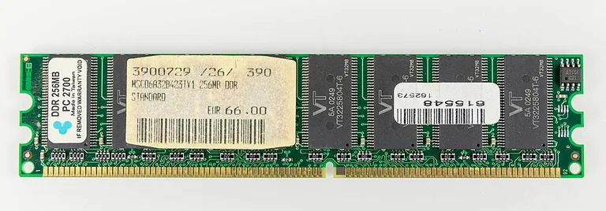
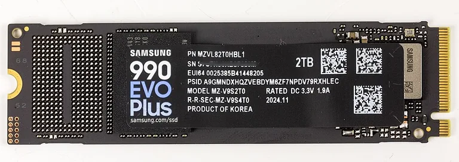
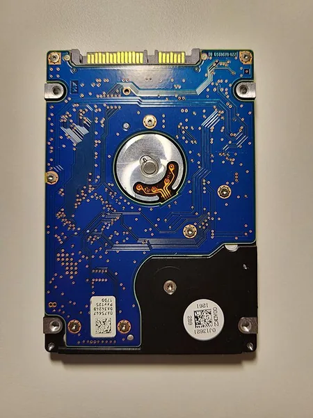
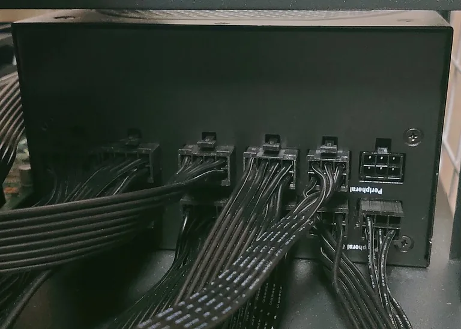
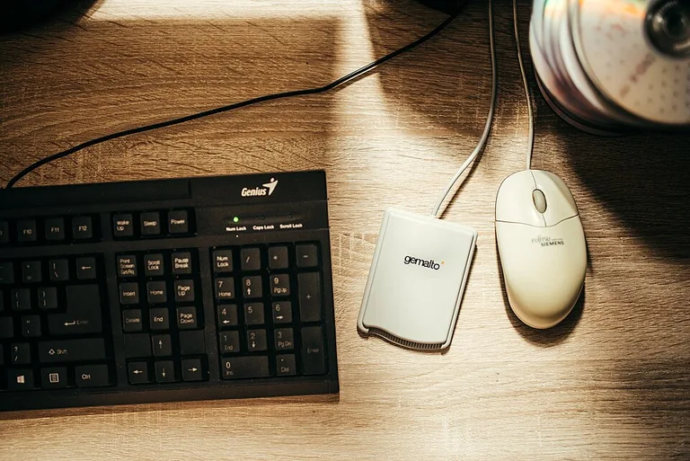

Prima di iniziare: richiamiamo la Lezione 03
Nella lezione precedente hai imparato che il software è la parte logica del computer ed è costituito da programmi. Un programma contiene istruzioni che indicano al computer quale compito svolgere.
Il software non può però agire da solo: per eseguire le istruzioni ha bisogno di parti fisiche. Queste parti formano l'hardware. Hardware e software sono diversi, ma lavorano sempre insieme.
Obiettivi della lezione
Al termine della lezione dovrai saper riconoscere l'hardware, descrivere il ruolo generale delle sue componenti principali e spiegare perché devono collaborare.
Che cosa c'è realmente dentro un computer?
Quando usi un computer vedi subito lo schermo, la tastiera e il mouse. Se osservassi anche l'interno del suo contenitore, troveresti altre parti: una scheda madre, un processore, moduli di memoria, un'unità di archiviazione e un alimentatore.
Alcune parti ricevono le azioni dell'utente, altre elaborano, conservano o mostrano dati. Nessuna di esse, da sola, svolge tutto il lavoro: il computer funziona perché componenti differenti collaborano.

Parti che puoi vedere
Tastiera, mouse, monitor e altri dispositivi esterni sono elementi fisici che puoi osservare e toccare.
Parti racchiuse nel computer
Scheda madre, CPU, RAM, archiviazione e alimentatore si trovano normalmente all'interno del contenitore.
Dall'osservazione alla definizione
È l'insieme di tutti i componenti fisici del computer.
Fanno parte dell'hardware sia i componenti interni, racchiusi nel computer, sia quelli esterni, collegati e utilizzati dall'utente. “Fisico” significa che il componente è un oggetto reale: può essere visto e, in condizioni sicure, toccato.
Le componenti principali: una panoramica
Per capire l'insieme, assegniamo a ogni componente un ruolo generale. Nelle lezioni successive alcune di queste parti saranno studiate più da vicino.
Scheda madre
È la scheda principale sulla quale sono collocate o collegate molte componenti. Permette loro di essere unite e di collaborare.

CPU
È la componente che esegue le istruzioni dei programmi e coordina le operazioni necessarie. Il suo funzionamento sarà approfondito in una lezione dedicata.

Memoria RAM
Mantiene temporaneamente a disposizione dati e programmi mentre il computer li sta usando. La studieremo meglio parlando di memorie.

Archiviazione: SSD o HDD
Conserva programmi e dati anche quando il computer non li sta usando. Per ora è sufficiente riconoscerne la funzione comune.


Alimentatore
Fornisce alle componenti l'energia elettrica necessaria per funzionare. Senza alimentazione nessuna componente del computer potrebbe funzionare.

Periferiche
Sono dispositivi collegati al computer che permettono di interagire con esso. Tastiera, mouse e monitor sono esempi comuni.

Come collaborano le componenti
Immagina di aprire un programma e chiedergli di lavorare su un dato. Possiamo descrivere ciò che accade con tre idee semplici: il computer riceve un input, lo elabora e produce un output.
-
Utente
Avvia un'attività.
-
Input
Il computer riceve un comando o un dato.
-
Elaborazione — CPU + RAM
CPU e RAM collaborano mentre il programma è in esecuzione.
-
Output
Il computer restituisce un risultato.
Questo è soltanto un modello mentale: non descrive una sequenza tecnica dettagliata. In particolare, CPU e RAM non lavorano una dopo l'altra, ma collaborano durante l'elaborazione. Nelle lezioni successive riprenderemo i concetti di input e output.
Hardware e software lavorano insieme
Riprendiamo l'esempio della calcolatrice della Lezione 03. Il programma stabilisce quali operazioni devono essere svolte; tastiera o mouse permettono di inserire i dati; le componenti interne eseguono il lavoro; il monitor mostra il risultato.
Il software indica
I programmi dicono al computer che cosa fare attraverso le loro istruzioni.
L'hardware esegue
Le componenti fisiche svolgono concretamente le operazioni necessarie.
Senza hardware un programma non può essere eseguito; senza software l'hardware non riceve le istruzioni per svolgere i compiti richiesti. Uno senza l'altro non è utile.
💻 Laboratorio guidato — Osserva l'hardware
Obiettivo: osservare il computer che stai utilizzando e distinguere gli elementi hardware visibili.
-
Osserva senza smontare.
Guarda il computer e i dispositivi collegati. Non aprire il contenitore e non scollegare cavi.
-
Elenca gli elementi fisici.
Scrivi i nomi delle parti che puoi vedere, per esempio monitor, tastiera, mouse o webcam.
-
Indica il ruolo generale.
Per ogni elemento annota in una frase che cosa permette di fare.
-
Ricorda le parti interne.
Aggiungi all'elenco le componenti interne studiate, anche se non sono visibili.
-
Spiega la collaborazione.
Scegli un'attività, come scrivere una parola, e racconta quali elementi hardware possono collaborare per ottenere il risultato.
Esercizi di consolidamento
1. Interno o esterno?
Classifica scheda madre, mouse, CPU, monitor, RAM e tastiera.
2. Associa il ruolo
Collega CPU, RAM, archiviazione e alimentatore alla loro funzione generale.
3. Trova l'intruso
Tastiera, browser, monitor, SSD: individua l'elemento che non è hardware e motiva la scelta.
4. Racconta una collaborazione
Spiega con un esempio perché il computer non funziona grazie a una sola componente.
🧠 Autoverifica
Rispondi prima a voce. Apri la risposta soltanto dopo.
1. Che cos'è l'hardware?
È l'insieme di tutti i componenti fisici del computer.
2. Hardware e software sono la stessa cosa?
No. L'hardware comprende le parti fisiche; il software è la parte logica ed è costituito dai programmi.
3. La tastiera è hardware o software?
È hardware, perché è un dispositivo fisico collegato al computer.
4. Un programma può funzionare senza hardware?
No. Il programma ha bisogno delle componenti fisiche che eseguono le sue istruzioni.
5. Quali sono alcune componenti interne del computer?
Scheda madre, CPU, RAM, unità di archiviazione e alimentatore.
6. Perché le componenti hardware devono collaborare?
Perché svolgono ruoli differenti e il risultato richiede il contributo di più parti.
Glossario essenziale
- Hardware
- Insieme di tutti i componenti fisici del computer.
- Scheda madre
- Scheda principale che unisce e collega molte componenti.
- CPU
- Componente che esegue le istruzioni dei programmi.
- RAM
- Memoria che mantiene disponibili dati e programmi in uso.
- Archiviazione
- Componente che conserva programmi e dati.
- Periferica
- Dispositivo collegato al computer che permette di interagire con esso.
Sintesi essenziale
🎒 Lo zaino dello studente
Se domani dimenticassi quasi tutto, queste sono le idee che dovresti riuscire a ricostruire.
✅ Le 5 idee fondamentali
- L'hardware comprende tutti i componenti fisici.
- Esistono componenti interni ed esterni.
- Ogni componente svolge un ruolo generale differente.
- Le componenti collaborano per ottenere un risultato.
- Hardware e software sono diversi ma lavorano insieme.
📝 5 parole chiave
- Hardware
- Componente
- CPU
- Memoria
- Periferica
❓ 3 domande da esame
- Che cos'è l'hardware?
- Quali sono le principali componenti di un computer?
- Perché hardware e software devono lavorare insieme?
⏱️ Ripasso in 5 minuti
- Chiudi la pagina.
- Spiega a voce la definizione di hardware.
- Nomina cinque componenti e il loro ruolo generale.
- Descrivi un esempio di collaborazione.
Allenamento distribuito
Missione di ripasso · 10 minuti al giorno
Prova prima a rispondere senza consultare la pagina, poi controlla e correggi.
Elenca gli elementi hardware visibili sulla tua postazione.
Nomina cinque componenti interne e spiegane il ruolo generale.
Spiega con un esempio come collaborano più componenti.
Confronta hardware e software senza consultare la lezione.
Crediti delle immagini
Fotografie da Wikimedia Commons. Per questa pagina sono state ridimensionate e convertite in WebP, senza ritagli o modifiche del soggetto. Ogni fotografia conserva la licenza indicata.
- Computer inside.jpg — Carlosar — CC BY-SA 3.0. Torna alla foto: Interno di un PC.
- Computer-motherboard.jpg — Marcin Wieclaw (pcsite.co.uk) — CC BY-SA 4.0. Torna alla foto: Scheda madre.
- Intel CPU Celeron G3930 Kaby Lake top.jpg — Eric Gaba for Wikimedia Commons (utente Sting) — CC BY-SA 4.0. Torna alla foto: CPU.
- DDR RAM 256MB PC2700-8647.jpg — © Raimond Spekking / CC BY-SA 4.0 (via Wikimedia Commons). Torna alla foto: Memoria RAM.
- SSD Samsung 990 EVO Plus 2TB, Model MZ-V9S2T0-2800.jpg — © Raimond Spekking / CC BY-SA 4.0 (via Wikimedia Commons). Torna alla foto: SSD.
- Un Hard Disk da 2,5 pollici, da 320 gigabyte, con interfaccia SATA.jpg — VincentLR — CC BY-SA 4.0. Torna alla foto: HDD.
- Full modular ATX power supply unit.jpg — Project Kei — CC BY-SA 4.0. Torna alla foto: Alimentatore.
- A computer keyboard and mouse are positioned on a wooden des.jpg — Shixart1985 — CC BY 2.0. Torna alla foto: Periferiche.